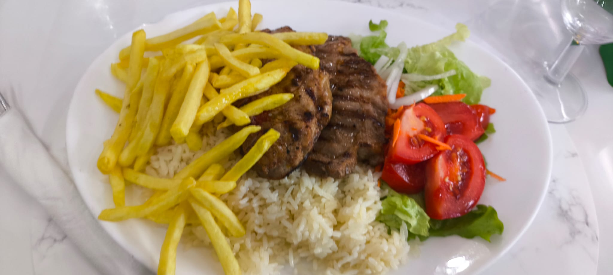

Jogar
Geralmente gosto de passar maior parte do meu tempo a jogar. Muitos desses jogos são de simulação ou são um first person shooter
Os jogos que mais jogo são o War Thunder, League of Legends, Counter strike 2, Cyberpunk 2077 e battlefield 6

No entanto é claro, consoante o tempo posso arranjar novas coisas e largar outras.
Geralmente gosto de passar maior parte do meu tempo a jogar. Muitos desses jogos são de simulação ou são um first person shooter
Os jogos que mais jogo são o War Thunder, League of Legends, Counter strike 2, Cyberpunk 2077 e battlefield 6
A certo ponto da minha vida cheguei a ter muito tempo livre na minha mão.
Isso incluia madrugadas que davam oportunidade ao aborrecimento para enfluenciar nas coisas de madeira que fazia.

Gosto de saborear comida que gosto e de experimentar novos sabores.
Não há muito que se lhe diga pois como toda a gente um bom bifinho com arroz ou até mesmo uma sopa das pedras deixa uma pessoa feliz.

Gosto de fazer cosplay e de ir ás convenções.
Gosto de fazer cosplay pois permite-me experimentar e fazer coisas como por exemplo roupa e permite-me também conhecer pessoas e interagir com pessoas com os mesmos gostos que eu.

Passo tempo também a ouvir música enquanto faço alguma coisa, muitas das vezes tou a jogar e nos meus headphones por trás está a tocar música. Pessoalmente ouço de tudo.
O meu gosto musical é mais inclinado para o rock e o metal no entanto gosto de ouvir também rap, techno e até mesmo classica.
Algumas das minhas bandas e cantores favoritos são os Metalica, Ozzy Osbourne, Jack Black, Slash, Sabaton, Eminem, ABBA, Boney M e também Quim Barreiros
Uma das minhas musicas favoritas